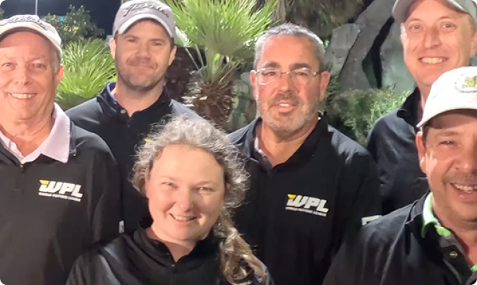

<div class="about">
  <div class="wrapper big-wrapper">
    <div class="about-body padding-top-bottom">

      <div class="about-header">

        <div class="about-header-leftside">
          <h3 class="medium-title">Recap Of World Putting League Event</h3>
          <h4 class='medium-subtitle'>Hawaii Rumble in Myrtle Beach, South Carolina, February 27-28, 2023.</h4>

          <div class="txt-card">
            <p class='text black'>These athletes devote countless hours to perfect their game and and finally had their
              chance to showcase their talents to the world. There couldn't be a better inaugural champion than Gary
              Hester, a
              mainstay at USPMGA events for decades.</p>
            <h5 class='bold-txt-small'>Bob Detwiler, USPMGA Commissioner</h5>
          </div>
        </div>

        <div class="about-header-rightside">
          
        </div>
      </div>

      <div class="about-txt-block">
        <p class="txt-block-leftside text gray">US National Mini Golf Team member Gary Hester (+550 field) won the
          inaugural
          World
          Putting League Championship at Hawaiian Rumble Minigolf in Myrtle Beach, S.C. after shooting a final round 31
          for 5 under par to defeat Matt McCaslin (33, 3 under par; +190 pre-tournament to win) and take home the $5,000
          championship purse.</p>
        <p class="txt-block-rightside text gray">
          Hester finished the Day 1 qualifying rounds by shooting 32 (-4) and 31 (-5), respectively, to combine for 9
          under par and the No. 2 seed heading into the Day 2 match play bracket. After Day 1, Hester’s odds to win
          moved to +420.<br><br>

          Hester defeated Rick Alessi with a 35 (-1) in the quarterfinals before squeaking by Joey Graybeal in the
          semifinals by one stroke, 32 (-4) to 33 (-3). Graybeal entered the Day 2 quarterfinals as the top seed (-350
          to win after Day 1) after pacing the field with a combined -9 in the two qualifying rounds.
        </p>
      </div>
    </div>
  </div>
</div>